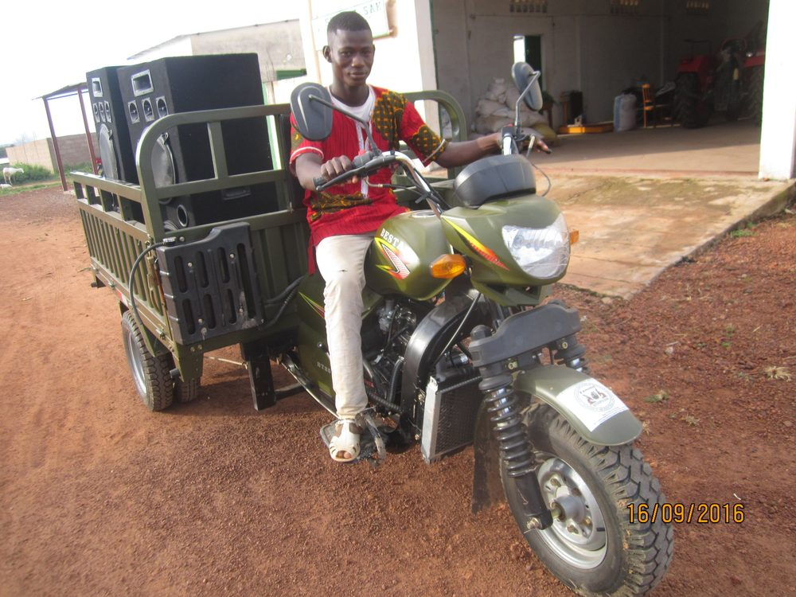

Mécanisation & équipements
Du matériel agricole moderne et des pièces de rechange pour une exploitation performante
Des équipements adaptés aux producteurs
ZAMOHO met à disposition du matériel de mécanisation agricole : motoculteurs, batteuses multifonctionnelles, semoirs, tricycles, et propose également un large stock de pièces détachées pour tracteurs et engins. Bénéficiez de conseils techniques pour choisir et entretenir votre matériel.
Nos équipements en location / vente
Motoculteur 13 CV
Idéal pour le labour, le buttage et le sarclage. Équipé d’une charrue et d’une herse rotative. Pour les petites et moyennes exploitations.
Batteuse multifonctionnelle
Pour maïs, sorgho, mil et niébé. Capacité 500 kg/h. Motorisation diesel 7 CV. Battage et vannage.
Semoir à 4 rangs
Semoir de précision pour maïs, coton et céréales. Rangs réglables, trémie 50 L. Idéal pour les semis directs après labour.

Tricycle agricole
Tricycle à moteur avec benne basculante (800 kg). Transport de récoltes, d’intrants et d’eau. Très maniable en brousse.
Pièces de rechange disponibles
Filtre à air
Filtre à air sec pour tracteurs agricoles (Massey Ferguson, John Deere, New Holland).
Courroie trapézoïdale
Courroie pour batteuses et motoculteurs. Résistance à l’usure renforcée.
Pneumatique avant tracteur
Pneu 6.00-16 8PR pour tracteurs agricoles (axe avant). Livré avec chambre à air.
Bougie d'allumage
Bougie pour motoculteurs Honda et autres moteurs essence 4 temps.
Vous ne trouvez pas une pièce ?
Contactez-nous, nous pouvons la commander pour vous.
Demander une pièce spécifique